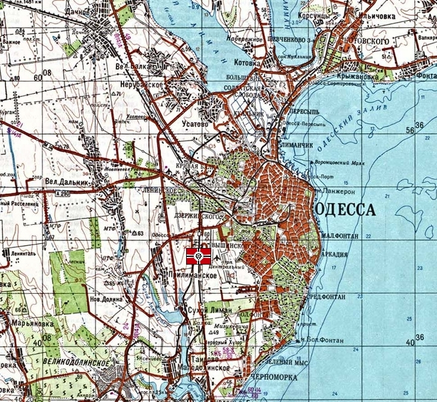

Odessa Odessa
Central Asia, Crimean Peninsula Coastal Urban Fortress Ma Kube Odessa lies on the western coast of the Black Sea, a Ukranian city of strategic importance to Central Asia and one of the largest spaceports on Earth. Run almost exclusively by the MAF, Kycillia has been known to make sporadic inspections here, but the day to day operations are run by Ma Kube. Odessa contains a large war factory, producing the majority of Zeons Eurasian forces, and is also the central hub of the Eurasian mining operation. To Zeons top brass, Odessa is considered their war machines lifeline. It also guards the only reasonable land route to the massive spaceport at Baikonour. Ma Kube Ma Kube is an insidious, devious and spiteful commander, the MAF officer well known to not play by the rules of engagement. He is an expert at planning ambushes, willing to sacrifice his own forces to win a battle, and fanatically loyal to lady Kycillia. Those close to him have noted that his personality is rather odd, to the point of some not calling him quite sane. He has a deep love for fine glassware, and designs his own mobile suits in his spare time. Odessa  |